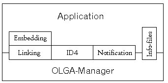

The OLGA protocol (Object Linking for GEM Applications) was developed by Thomas Much, and permits object linking under GEM too.
As this concept may not be familiar to all readers, first a possible example of its application: Imagine you are using your text processor and would like to enhance your document with a graphic. After placing your graphic in the text, you decide to alter it slightly. Normally you would have to switch over to your graphics program, perform the desired changes there, switch back to the text processor, discard the old graphic, then import and position the new one. But if both of the applications (i.e. graphics program and text processor) support the OLGA protocol, the solution of this task could look as follows: You switch to the graphics program, modify the graphic there, and after saving it you are finished! Because the text processor automatically recognizes that the graphic has been altered, and itself replaces it in the document!
The above example presupposes a multitasking operating system such as MagiC or MultiTOS. And in fact: Single-TOS systems are not supported by OLGA (since Rev. 1.0 - earlier versions could also be run as desk accessories.) Those wanting to involve themselves closer with the OLGA protocol should take note of the following points:
OLGA works in a document centred manner, i.e. the protocol is prepared for one application handling multiple documents (possibly even of different data-types). For controlling the object linking, use is made of a so-called OLGA-Manager (in short: Manager). Communication between the applications is transacted wholly via this Manager (which, by the way, can be present only once in the system).
The illustration below shows a simple model of OLGA communication.
The actual object linking is realized in OLGA with so-called links: these are references from the Client to data objects, or more exactly filenames with absolute path, which are saved by the Client in a document. If now the Server makes changes to an object for which a link exists, then the Client is informed of this (by the Manager), and can then update itself to display the updated object.
From Rev 1.2 (1996-11-20) onwards, extra functions were added and the OLGA architecture model now looks like this:

The above illustration shows the distribution of services between the OLGA-Manager and the applications using it (i.e. Client or Server). During linking, InplaceDrawing and Notification, the correct balance of communication between Manager and application for the embedding is the sole responsibility of the Client application.
Finally, the Info files are co-ordinated by the Manager but then operate directly between Server and Client applications. Schematically communications are handled something like this:
See also: AV protocol Drag&Drop protocol
Initialization and termination with OLGA
The OLGA protocol corresponds to the OLE protocol, which enables object embedding with OEP (object exchange protocol) and object linking with OLGA. As it may be sensible to support both variants in an application, both protocols (i.e. OLGA und OEP) are initialized with the same messages, possibly simultaneously(!)
The routines required to register and deregister themselves run as follows:
As already mentioned. the communication between the OLGA applications proceeds via a Manager, whose AES ID for the message exchange has to be ascertained. The recipe for this runs as follows:
· 1: The application requires OLE (i.e. OEP and OLGA)
| (a) | If appl_find("OLEMANGR") is successful the Manager
has already been located.
|
| (b) | Otherwise the environmnetal variable OLEMANAGER is evaluated.
This can contain a complete access path! First of all the program name
for appl_find is extracted and then proceeds as for (a). If the name
cannot be ascertained the program indicated by OLEMANAGER is launched
using shel_write.
|
| (c) | If the above has not been successful, there is obviously no
OLE-Manager and one may have to make do with the OLGA protocol. To do
this (similar to (a)) an appl_find("OLGA ") as well
as appl_find("OEP_SERV") is performed and two Managers
must now be supported!
|
| (d) | If all else fails the environmental variables OLGAMANAGER and
OEPSERVER, as under (b) are evaluated.
|
• 2: The application only requires OLGA
The process proceeds as for (1), except the sequence is altered to (c), (d), (a) and (b). However, OEP_SERV and OEPSERVER are not evaluated because it's unlikely an OEP-Server will understand the OLGA-Protocol.
See also: OLGA protocol AV protocol Drag&Drop protocol
An OLGA-Client is an application capable of editing objects used in other applications. Note that applications can be both Client and Server simultaneously; this doesn't cause problems and is highly desireable in most cases.
The following messages can be sent to or received from an OLGA-Client:
| • OLGA_CLOSEDOC | Indicates closing of a document |
| • OLGA_GETINFO | Obtains index number for an Info file |
| • OLGA_LINK | Indicates inclusion of a file in a document |
| • OLGA_LINKBROKEN | Reference to an object is no longer available |
| • OLGA_LINKRENAMED | Reference to an object has been updated |
| • OLGA_OPENDOC | Registers document with Manager |
| • OLGA_RENAMELINK | Updates reference to an object |
| • OLGA_START | Launches Server for a Client in parallel |
| • OLGA_UPDATED | Server has altered a file |
| • OLGA_UNLINK | Terminates monitoring of a file |
| • OLGA_SERVERTERMINATED | Server has terminated |
Warning: One has to point out here that in view of future operating system versions, memory regions used for communication between various programs or assigned via pointers have to be global (Mxalloc function with Global flag set). Otherwise, memory protection violation would occur if used on computers with PMMUs (e.g. Atari-TT030 or Falcon030).
See also: Minimum requirements OLGA protocol OLGA-Server
An OLGA-Server is an application capable of creating and editing objects. Note that applications can be both Client and Server at the same time; this doesn't cause problems and is highly desireable in most cases.
The following messages can be sent to or received from an OLGA-Server:
| • OLGA_BREAKLINK | Breaks link to an object |
| • OLGA_INFO | Reply to an OLGA_GETINFO message |
| • OLGA_RENAME | Reports name change of an object |
| • OLGA_UPDATE | Reports change to an object |
| • OLGA_CLIENTTERMINATED | Reports Client terminated |
Warning: One has to point out here that in view of future operating system versions, memory regions used for communication between various programs or assigned via pointers have to be global (Mxalloc function with Global flag set). Otherwise, memory protection violation would occur if used on computers with PMMUs (e.g. Atari-TT030 or Falcon030).
See also: Minimum requirements OLGA protocol OLGA-Client
| Name: | »OLGA_BREAKLINK« - Break link to an object.
| ||||||||||||||||
| Number: | 0x1244
| ||||||||||||||||
| Description: | This message is sent by the Server to the Manager when it
deletes a file, or otherwise makes it unusable for the Client.
Note: The Manager subsequently informs all Clients that have set a link to this file about the break. The Server subsequently receives a reply from the Manager, so that it can be certain that its intention was understood. | ||||||||||||||||
| Group: | OLGA-Server
| ||||||||||||||||
| See also: | OLGA_INFO OLGA_RENAME OLGA_UPDATE
|
This message is received by the Server as a reply to a sent OLGA_BREAKLINK message:
Word 0 = OLGA_ACK (0x1239) Word 1 = apID Word 2 = 0 Word 3+4 = Exactly the same value from OLGA_BREAKLINK Word 5 = 0 Word 6 = 0 Word 7 = OLGA_BREAKLINK
| Name: | »OLGA_INFO« - Reply to an OLGA_GETINFO message.
| ||||||||||||||||||
| Number: | 0x1248
| ||||||||||||||||||
| Description: | This message is to be uderstood as a reply to OLGA_GETINFO, and
is sent by the Server directly to the Client.
Note: Before sending this message the Server may have to construct the associated Info file if this is not present already. A Client however must not rely on the receipt of this reply, since the Server may have been terminated in the meantime; in addition it may make only a read access to the file. As soon as the Client has closed the Info file again, it sends a reply to the Server, so that it may possibly delete this file again. | ||||||||||||||||||
| Group: | OLGA-Server
| ||||||||||||||||||
| See also: | OLGA_BREAKLINK OLGA_RENAME OLGA_UPDATE
|
This message is received by the Server as a reply to a sent OLGA_INFO message:
Word 0 = OLGA_ACK (0x1239) Word 1 = apID Word 2 = 0 Word 3+4 = Exactly the same value from OLGA_INFO Word 5 = Index number of desired Info file Word 6 = 0 Word 7 = OLGA_INFO
| Name: | »OLGA_RENAME« - Report name change of an object.
| ||||||||||||||||||
| Number: | 0x123a
| ||||||||||||||||||
| Description: | This message is sent by the Server to the Manager if the user
has renamed or moved a file in the Server. The following apply:
Note: It is up to the discretion of the Server whether it sends this message after the 'Save as...' command. It would be sensible in any case if the Server adopts the new path specification, or new filename, for the the document. Though links should exist only for files on non-interchangeable media, in practice this may be difficult or impossible to achieve. If the contents of the file has changed, then additionally the message OLGA_UPDATE has to be sent. The Server subsequently receives a reply, to which it can react for instance by releasing the old memory area. Incidentally, the confirmation only means that the Manager has passed on the renaming; if the Client does not react to this, then the corresponding link is dead, i.e. it can no longer be supervised! | ||||||||||||||||||
| Group: | OLGA-Server
| ||||||||||||||||||
| See also: | OLGA_BREAKLINK OLGA_INFO OLGA_UPDATE
|
This message is received by the Server as a reply to a sent OLGA_RENAME message:
Word 0 = OLGA_ACK (0x1239) Word 1 = apID Word 2 = 0 Word 3+4 = Exactly the same value from OLGA_RENAME Word 5+6 = Exactly the same value from OLGA_RENAME Word 7 = OLGA_RENAME
| Name: | »OLGA_UPDATE« - Report change to an object.
| ||||||||||||||||||||||
| Number: | 0x1238
| ||||||||||||||||||||||
| Description: | This message has to be sent by the Server to the Manager when
it has saved a file.
Note: The handling is presently not case-sensitive, i.e. it makes no difference whether the filename is in capitals or lower case, so that the linking does not fail with differing user input. However, this will not be the case any more in later versions (for use with alternative filesystems). The Server subsequetly receives a reply, to which it can react for instance by releasing the old memory area reserved for the filename. | ||||||||||||||||||||||
| Group: | OLGA-Server
| ||||||||||||||||||||||
| See also: | OLGA_BREAKLINK OLGA_INFO OLGA_RENAME
|
This message is received by the Server as a reply to a sent OLGA_UPDATE message:
Word 0 = OLGA_ACK (0x1239) Word 1 = apID Word 2 = 0 Word 3+4 = Exactly the same value from OLGA_UPDATE Word 5 = 0 Word 6 = 0 Word 7 = OLGA_UPDATE
| Name: | »OLGA_CLIENTTERMINATED« - A Client was terminated.
| ||||||||||||||||||||||
| Number: | 0x1255
| ||||||||||||||||||||||
| Description: | If a Client is terminated that was started by a Server using
OLGA_START, the Server receives the following message:
Note: This function was added as of Rel. 1.2. | ||||||||||||||||||||||
| Group: | OLGA-Server
| ||||||||||||||||||||||
| See also: | OLGA_START
|
| Name: | »OLGA_CLOSEDOC« - Indicate closing of a document.
| ||||||||||||||||||
| Number: | 0x123c
| ||||||||||||||||||
| Description: | This message should be sent by the Client to the OLGA- Manager
when a document is closed.
Note: The Manager can then delete all links with the corresponding group number. Although this could be done with individual OLGA_UNLINK calls as well, this is a much simpler way for releasing the Manager-internal structures. The message must not be used at program termination, as OLE_EXIT already causes all the required actions to be taken. As a reply, the Client receives a simple confirmation. | ||||||||||||||||||
| Group: | OLGA-Client
| ||||||||||||||||||
| See also: | OLGA_GETINFO OLGA_LINK OLGA_LINKBROKEN OLGA_OPENDOC
OLGA_LINKRENAMED OLGA_START OLGA_UPDATED OLGA_UNLINK
|
This message is received by a Client as a reply to a sent OLGA_CLOSEDOC message:
Word 0 = OLGA_ACK (0x1239) Word 1 = apID Word 2 = 0 Word 3 = 0 Word 4 = 0 Word 5 = Group ID of the document Word 6 = 0 Word 7 = OLGA_CLOSEDOC
| Name: | »OLGA_GETINFO« - Obtain index number for an Info file.
| ||||||||||||||||||
| Number: | 0x1247
| ||||||||||||||||||
| Description: | With this message a Client can inquire directly of the Server
for an index number of an Info file, provided this has made one known at
OLGA_UPDATE.
Note: After the receipt of this message the Server can construct the corresponding file if this is not present yet. Additionally one should note that the passed index number may be invalid, in which case it must be ignored by the Server. | ||||||||||||||||||
| Group: | OLGA-Client
| ||||||||||||||||||
| See also: | OLGA_CLOSEDOC OLGA_LINK OLGA_LINKBROKEN OLGA_OPENDOC
OLGA_LINKRENAMED OLGA_RENAMELINK OLGA_START OLGA_UPDATED
OLGA_UNLINK
|
| Name: | »OLGA_LINK« - Indicate inclusion of a file in a document
| ||||||||||||||||||
| Number: | 0x123d
| ||||||||||||||||||
| Description: | This message has to be sent by the Client to the Manager if
this has incorporated a file in one of its documents.
Note: If the specified file is altered by an OLGA-Server (or an AV_PATH_UPDATE message is received from a program which is not a Server), then the Client receives a corresponding OLGA_UPDATED message. As confirmation the Client receives from the Manager a corresponding reply. | ||||||||||||||||||
| Group: | OLGA-Client
| ||||||||||||||||||
| See also: | OLGA_CLOSEDOC OLGA_GETINFO OLGA_LINKBROKEN
OLGA_LINKRENAMED OLGA_OPENDOC OLGA_RENAMELINK OLGA_START
OLGA_UPDATED OLGA_UNLINK
|
This message is received by a Client as a reply to a sent OLGA_LINK message:
Word 0 = OLGA_ACK (0x1239) Word 1 = apID Word 2 = 0 Word 3+4 = Exactly the same value from OLGA_LINK Word 5 = Group ID of the document Word 6 = 0=Error, otherwise: Link established Word 7 = OLGA_LINK
| Name: | »OLGA_LINKBROKEN« - Reference to an object is no longer
available.
| ||||||||||||||||||
| Number: | 0x1245
| ||||||||||||||||||
| Description: | This message is received by the Client from the Manager when a
file is no longer available to it (e.g. because it has been deleted).
Note: The Client can subsequently inform the user about this, or open a file-selector to permit another file to be chosen. In addition it ought to dissolve the now invalid link with a OLGA_UNLINK message. | ||||||||||||||||||
| Group: | OLGA-Client
| ||||||||||||||||||
| See also: | OLGA_CLOSEDOC OLGA_GETINFO OLGA_LINK OLGA_LINKRENAMED
OLGA_OPENDOC OLGA_RENAMELINK OLGA_START OLGA_UPDATED
OLGA_UNLINK
|
| Name: | »OLGA_LINKRENAMED« - Reference to an object has been updated.
| ||||||||||||||||||
| Number: | 0x1241
| ||||||||||||||||||
| Description: | This message must be sent by the Client to the Manager as the
reply to a OLGA_RENAMELINK message.
Note: If this reply is missing then the corresponding link is dead, i.e. it can not be supervised any more, since the old name is still stored in the Manager. | ||||||||||||||||||
| Group: | OLGA-Client
| ||||||||||||||||||
| See also: | OLGA_CLOSEDOC OLGA_GETINFO OLGA_LINK OLGA_LINKBROKEN
OLGA_OPENDOC OLGA_RENAMELINK OLGA_START OLGA_UPDATED
OLGA_UNLINK
|
| Name: | »OLGA_OPENDOC« - Register document with Manager.
| ||||||||||||||||||
| Number: | 0x123b
| ||||||||||||||||||
| Description: | This message can be sent by the Client to the Manager when a
document has been opened.
Note: Currently offered for information purposes only, the required internal structures are set by the Manager or on receipt of the first OLGA_LINK message. The group ID is a number unique within the Client which it can choose freely, with which the links within the Client can be assigned to documents; if possible, it should be specified in all cases, as it is required for the links. | ||||||||||||||||||
| Group: | OLGA-Client
| ||||||||||||||||||
| See also: | OLGA_CLOSEDOC OLGA_GETINFO OLGA_LINK OLGA_LINKBROKEN
OLGA_LINKRENAMED OLGA_RENAMELINK OLGA_START OLGA_UPDATED
OLGA_UNLINK
|
| Name: | »OLGA_RENAMELINK« - Update reference to an object.
| ||||||||||||||||||
| Number: | 0x1240
| ||||||||||||||||||
| Description: | This message is received by the Client from the Manager when
the Server has renamed or moved a file to which a link is set.
Note: This message should only direct the Client to update its internal reference; the document does not have to be redrawn. Incidentally, the pointer to the new name remains valid as long as the link exists. As reply to this message the Client has to send an OLGA_LINKRENAMED message to the Manager, so that it can opdate its reference and release surplus memory. | ||||||||||||||||||
| Group: | OLGA-Client
| ||||||||||||||||||
| See also: | OLGA_CLOSEDOC OLGA_GETINFO OLGA_LINK OLGA_LINKBROKEN
OLGA_LINKRENAMED OLGA_OPENDOC OLGA_START OLGA_UPDATED
OLGA_UNLINK
|
| Name: | »OLGA_START« - Launch Server for a Client in parallel.
| ||||||||||||||||||||||||
| Number: | 0x1246
| ||||||||||||||||||||||||
| Description: | With this message a Client can start up a suitable Server.
Note: To launch the program, the configuration file 'olga.inf' is evaluated (at OLS_TYPE and OLS_EXTENSION). The Server found there is first looked for in memory, and if successful called with VA_START. Otherwise, in a multitasking environment such as MagiC or MultiTOS etc. it is launched in parallel with shel_write. As confirmation one gets a simple reply, as well as a further message, to make it easier to release the command line (if this was not NULL). | ||||||||||||||||||||||||
| Group: | OLGA-Client
| ||||||||||||||||||||||||
| See also: | OLGA_CLOSEDOC OLGA_GETINFO OLGA_LINK OLGA_LINKBROKEN
OLGA_LINKRENAMED OLGA_OPENDOC OLGA_RENAMELINK OLGA_UPDATED
OLGA_UNLINK
|
This message is received by the Client as a reply to a sent OLGA_START message:
Word 0 = OLGA_ACK (0x1239) Word 1 = apID Word 2 = 0 Word 3 = OLS value from OLGA_START Word 4+5 = Exactly the same value as for OLGA_START Word 6 = 0=Error, otherwise: Server started Word 7 = OLGA_START
This message too is received by the Client as a reply to a sent OLGA_START message:
Word 0 = OLGA_ACK (0x1239) Word 1 = apID Word 2 = 0 Word 3 = 0 (!) Word 4+5 = Exactly the same value as for OLGA_START [6]+[7] Word 6 = 0=Error, otherwise: Server started Word 7 = OLGA_START
OLS_TYPE (0x0001):
Word[4] = 0
Word[5] contains an XAcc program type
OLS_EXTENSION (0x0002):
WORDs 4,5 contains a file extension (e.g. '.GEM')
OLS_NAME (0x0003):
WORD[4,5] contains a pointer to the absolute filename of
the application to be started.
| Name: | »OLGA_UPDATED« - Server has altered a file.
| ||||||||||||||||||||
| Number: | 0x123f
| ||||||||||||||||||||
| Description: | This message is received by the Client from the Manager when
the Server has altered a file to which a link is set.
Note: When the Client receives this message, it therefore should display the associated document anew. Incidentally, the pointer remains valid as long as the link exists. The identifier of the Server (WORD 6) is guaranteed to be set if WORD 5 has a non-zero value. To this ID (i.e. directly to the Server) one can then send an OLGA_GETINFO message. | ||||||||||||||||||||
| Group: | OLGA-Client
| ||||||||||||||||||||
| See also: | OLGA_CLOSEDOC OLGA_GETINFO OLGA_LINK OLGA_LINKBROKEN
OLGA_LINKRENAMED OLGA_OPENDOC OLGA_RENAMELINK OLGA_START
OLGA_UNLINK
|
| Name: | »OLGA_UNLINK« - Terminate monitoring of a file.
| ||||||||||||||||||
| Number: | 0x123e
| ||||||||||||||||||
| Description: | This message must be sent from the Client to the Manager when
the monitoring of a given file is to be terminated.
Note: If the document is closed, then OLGA_CLOSEDOC should be sent instead. If the Client terminates, then all the corresponding links will be deleted automatically with OLE_EXIT. The specified filename must correspond exactly with the character string passed at OLGA_LINK. As confirmation the Client receives a suitable reply. | ||||||||||||||||||
| Group: | OLGA-Client
| ||||||||||||||||||
| See also: | OLGA_CLOSEDOC OLGA_GETINFO OLGA_LINK OLGA_LINKBROKEN
OLGA_LINKRENAMED OLGA_OPENDOC OLGA_RENAMELINK OLGA_START
OLGA_UPDATED
|
This message is received by a Client as reply to a sent OLGA_UNLINK message:
Word 0 = OLGA_ACK (0x1239) Word 1 = apID Word 2 = 0 Word 3+4 = Exactly the same value as for OLGA_UNLINK Word 5 = Group ID of the document Word 6 = 0=Error, otherwise: Link removed Word 7 = OLGA_UNLINK
| Name: | »OLGA_SERVERTERMINATED« - Server terminated.
| ||||||||||||||||
| Number: | 0x123e
| ||||||||||||||||
| Description: | If a Server terminates, all clients this Server called via
OLGA_START are sent the following message:
Depending on which mode the Server was running in parallel, WORDs 4+5 will contain different values. If started with OLS_EXTENSION they will contain the extension, if started with OLS_TYPE WORD 4=0 and WORD 5 contains the XAcc program type. If started with OLS_NAME both fields are nulled. Note: This function was added as of Rel. 1.2 (1996-11-20). | ||||||||||||||||
| Group: | OLGA-Client
| ||||||||||||||||
| See also: | OLGA_CLOSEDOC OLGA_GETINFO OLGA_LINK OLGA_LINKBROKEN
OLGA_LINKRENAMED OLGA_OPENDOC OLGA_RENAMELINK OLGA_START
OLGA_UPDATED
|
An OLGA-Server must do at least the following:
· Send OLE_INIT · Evaluate OLE_NEW · Receive OLGA_INIT · Send OLE_EXIT · Support VA_START
In order for the Server to really function as such the OLGA_UPDATE message must also be sent.
An OLGA-Client must do at least the following:
· Send OLE_INIT · Evaluate OLE_NEW · Receive OLGA_INIT · Send OLE_EXIT · On receiving OLGA_RENAMELINK reply with OLGA_LINKRENAMED · On receiving OLGA_LINKBROKEN reply with OLGA_UNLINK
| Name: | »OLE_EXIT« - Disengage from the protocol.
| ||||||||
| Number: | 0x4951
| ||||||||
| Description: | This message should be sent at program termination to the
Manager.
Note: Moreover, the message is sent to the applications by the Manager when this terminates. If the terminating program is an OLGA-Client all corresponding links and documents are deleted. | ||||||||
| Group: | OLGA initialization
| ||||||||
| See also: | OLE_INIT OLE_NEW OLGA_INIT
|
| Name: | »OLE_INIT« - Register application with the Manager.
| ||||||||||||||||||||||||||||||||||||||||||||||||||||||
| Number: | 0x4950
| ||||||||||||||||||||||||||||||||||||||||||||||||||||||
| Description: | This message must be sent to the OLGA-Manager if one has been
found, and ensures that the relevant application is known to the
Manager.
Note: If a protocol is not supported by the application then the WORDs 3 and 4 or 5 and 6 should be nulled. Depending on the protocol chosen, one then receives from the Manager an OEP_CONFIG and/or an OLGA_INIT message and one should then proceed as in the descriptions of the relevant protocol. | ||||||||||||||||||||||||||||||||||||||||||||||||||||||
| Group: | OLGA initialization
| ||||||||||||||||||||||||||||||||||||||||||||||||||||||
| See also: | OLE_EXIT OLE_NEW OLGA_INIT
|
| Name: | »OLE_NEW« - Manager was launched in parallel.
| ||||||||||||||||||||||||||||
| Number: | 0x4952
| ||||||||||||||||||||||||||||
| Description: | This message is sent by the Manager to all reachable
applications when it has been started in parallel (only applies in a
multitasking environment).
After receipt and evaluation of this message an application should send a OLE_INIT message. The values in OLE_NEW do not replace the reply from OEP_CONFIG/OLGA_INIT, which are for information only! (For example, if a new Manager only supports one of the protocols, the old Manager may continue to be used). | ||||||||||||||||||||||||||||
| Group: | OLGA initialization
| ||||||||||||||||||||||||||||
| See also: | OLE_EXIT OLE_INIT OLGA_INIT
|
| Name: | »OLGA_INIT« - Verification of registration with OLE_INIT.
| ||||||||||||||||||||||||||||
| Number: | 0x1236
| ||||||||||||||||||||||||||||
| Description: | This message is sent as reply to an OLE_INIT message as
verfification.
Note: Applications should use the OLGA mechanism only after they have received this message and this has not signalled an error. Exception: With programs that already open documents during their startup phase, it may be sensible to use this protocol even without receiving this message; but in that case any errors arising in the application will not be reported by the Manager. | ||||||||||||||||||||||||||||
| Group: | OLGA initialization
| ||||||||||||||||||||||||||||
| See also: | OLE_EXIT OLE_INIT OLE_NEW
|
The OLGA protocol enables the exchange of speciallised information between Client and Server with so-called Info files. These files contain two types of data structures:
Note: Please do not confuse these files with OLGA.INF!
InfHeader BlockHeader 1 Daten 1 BlockHeader 2 Daten 2 ... ... BlockHeader n-1 Daten n-1 BlockHeader n (id=0)
The file end (and consequently block n) is identified by an ID with the value 0. Some of the subsequent block IDs are already defined. In detail:
| ID | Meaning |
| 'AUTH' | Author: The coding corresponds to 'REM ' (see below), |
| though it should be restricted to a single (0-terminated) | |
| line | |
| 'DATE' | Date of the last change as DOSTIME structure |
| 'KEYW' | Keywords: Coding coresponds to 'REM ' (see below); |
| within lines the keywords are separated using commas | |
| 'REM ' | Comments: Individual lines are NULL-terminated, the end |
| will be recognised by the length (so empty lines can be | |
| sent as well) | |
| 0x00000000 | File end: So the component length of the OLGABlockHeader |
| structure should have the value 0 |
Warning: This naturally does not establish at all which blocks in general (or in what sequence) are actually saved. Thus unknown blocks have to be ignored (i.e. jumped over). New block IDs can be defined freely; but to avoid collisions with already existing IDs, it is best if programmers first contact the OLGA developer.
See also: OLGA protocol OLGA-Client OLGA-Server
typedef struct
{
LONG magic; /* Identifier: 'OLGA' */
WORD version; /* Version number (at present 0x0120) */
WORD skip; /* Number of following header bytes */
/* which must be skipped, currently 0 */
} OLGAInfHeader;
typedef struct
{
LONG id; /* Block-ID */
LONG length; /* Number of data bytes following */
} OLGABlockHeader;
This function is one of a set added to OLGA in Rev 1.2 (1996-11-20).
For InplaceDrawing ('ID4-OLGA', 'ID4') to function, the OLGA-Manager must be correctly installed and OLGA.INF must be properly structured (containing the [Extensions] and [Objects] sections). ID4-Server and -Clients are entirely normal OLGA-Server and OLGA-Clients, which additionally support the ID4-Client and ID4-Server protocols.
ID4-Clients embed objects in its documents (which is why these Clients are also called 'Container applications'). A Client uses the function OLGA_GETOBJECTS to ascertain all the ID4-objects in OLGA.INF which could, for example, display the following dialog:
For each object that is to be embedded, an ID4-Client must put the following structure in global memory (see also OLGA.H and OLGA.INC):
typedef struct ObjectInfo
{
char *Filename;
AESPB *ClientGEMPB;
long ClientData,
ServerData;
int CBLock,
CBCount;
void cdecl (*CBDraw) (ObjectInfo *objectinfo,
int outScreen,
int outHandle,
int outDevID,
GRECT *Size,
GRECT *Clip);
void cdecl (*CBUnembed) (ObjectInfo *objectinfo);
} OLGAObjectInfo;
Afterwards the required ID4-Servers can be started in parallel using OLGA_ACTIVATE and all objects will be included individually with OLGA_EMBED.
To draw an object, a Client proceeds as follows: First of all OLGAObjectInfo.CBLock of the corresponding object is increased by one. Immediately afterwards the Client tests whether CBLock contains a value higher than NULL. If this is not the case the Client must not call the Callback routines! Otherwise the Client tests whether CBDraw is not NULL - if yes it calls the Callback routine. Finally CBLock is again decremented (reduced by one).
On receipt of OLGA_INPLACEUPDATE, Clients should re-draw the object contained (or passed) in this message.
On deletion of an object (or closing of a document i.e. termination of the Client) CBUnembed must be called for every object, so long as the Callback is not NULL. The safeguards with CBLock described above apply. The Server then knows that for this object no more ID4-linking exists (or is one less).
Conversely a Server sends the Client OLGA_UNEMBED if it can no longer provide (or there is drawn) an embedded object. The Client can then mark the object 'invalid' (for example it could display a white rectangle crossed out in red). A Client should react similarly on receipt of an OLGA_SERVERTERMINATED message.
This function was added to OLGA in Rev 1.2 (1996-11-20).
See also: OLGA_GETOBJECTS OLGA_ACTIVATE OLGA_EMBED
An ID4-Client can use this message to ask the Manager which filetypes can be embedded via ID4-OLGA.
| Parameter | Meaning |
| WORD 0 | Message number (0x1242) |
| WORD 1 | AES ID of own program (apID) |
| WORD 2 | 0 |
| WORD 3 | First (0) or further (1) object |
| WORD 4 | 0 |
| WORD 5 | 0 |
| WORD 6 | 0 |
| WORD 7 | 0 |
In reply the Client receives the OLGA_OBJECTS message, including the extension and plain text description of the filetype for the User selection.
The Manager replies to the ID4-Client with an OLGA_OBJECTS message as follows:
| Parameter | Meaning |
| WORD 0 | Message number (0x1243) |
| WORD 1 | Manager identifier (manID) |
| WORD 2 | 0 |
| WORD 3 | Number of objects which can still be |
| retrieved (0 means this is the last object) | |
| WORD 4+5 | Extension of the file format, e.g. '.GEM' |
| WORD 6+7 | Pointer to the plain text object description |
| (valid until the Manager is terminated) |
The message OLGA_GETOBJECTS must now be sent to the Manager until the OLGA_OBJECTS WORD 3 returns NULL.
This function was added to OLGA in Rev 1.2 (1996-11-20).
See also: OLGA protocol OLGA_ACTIVATE OLGA_EMBED
Sometime before drawing, ideally before embedding the first object, and outside (!) a wind_update blocking, the ID4-Client should send the Manager the following message. If the Client, before the next wind_update, does not enter its event loop, it must perform an event_timer of at least 1000ms after it.
The Client sends to the Manager:
| Parameter | Meaning |
| WORD 0 | Message number (0x124a) |
| WORD 1 | AES ID of own program (apID) |
| WORD 2 | 0 |
| WORD 3+4 | Pointer to 4-character extensions (e.g. |
| '.GEM.CWG'); if necessary shorten or fill | |
| with Nullbytes (!) | |
| WORD 5 | Number of extensions (>=1) |
| WORD 6 | 0 |
| WORD 7 | 0 |
In this message all different extensions of all embedded objects should be passed so the Manager can then start a suitable Server. As confirmation the Manager sends the following message:
| Parameter | Meaning |
| WORD 0 | Message number (0x1239) |
| WORD 1 | Manager identifier (manID) |
| WORD 2 | 0 |
| WORD 3 | Same value as in the received OLGA_ACTIVATE |
| WORD 4 | Same value as in the received OLGA_ACTIVATE |
| WORD 5 | Same value as in the received OLGA_ACTIVATE |
| WORD 6 | 0 |
| WORD 7 | OLGA_ACTIVATE |
This function was added to OLGA in Rev 1.2 (1996-11-20).
See also: OLGA protocol OLGA_GETOBJECTS OLGA_EMBED
To embed an object, a Client places a OLGAObjectInfo structure in global memory and sets the fields Filename (absolute filename, NULL- terminated), ClientGEMPB (contains a pointer to the structure, the pointer to the GEM arrays global etc.), ClientData (any Client data), CBLock (constant on -16000) as well as CBCount (to date always 2) and nulls all other fields. Then the Client sends the Manager the following message:
| Parameter | Meaning |
| WORD 0 | Message number (0x124b) |
| WORD 1 | clientID |
| WORD 2 | 0 |
| WORD 3 | Client-flag |
| WORD 4+5 | Pointer to OLGAObjectInfo of the object |
| WORD 6+7 | Extension |
The Client flag can be freely set from the Client and will later be returned to the Client. The extension describes the filetype of the filenames from OLGAObjectInfo (e.g. '.GEM'). This extension is used to communicate with the ID4-Server - which must already be running in parallel (see OLGA_ACTIVATE).
The actual embeding may be carried out by the Client only when it has received the following OLGA_EMBEDDED message direct from the Server:
| Parameter | Meaning |
| WORD 0 | Message number (0x124c) |
| WORD 1 | serverID |
| WORD 2 | 0 |
| WORD 3 | Client-flag |
| WORD 4+5 | Pointer to OLGAObjectInfo |
| WORD 6 | Width of the object in 1/100mm (unsigned), |
| 0 on error | |
| WORD 7 | Height of the object in 1/100mm (unsigned), |
| 0 on error |
Client-flag and OLGAObjectInfo pointer are unchanged to OLGA_EMBED. The ServerData may have been changed by the Server (as the name indicates, this field belongs to the Server and may not be changed by the Client), and in CBDraw the Server should enter a pointer to its drawing routine.
With WORD 6/WORD 7 the Server informs the Client of the optimum object size. The client need not maintain this size, but in any case it knows the aspect ratio (proportions) of the object from the width/height ratio.
Important: If WORD 6/WORD 7 are NULL, an error has been encountered (in this case the Manager may already have sent out an OLGA_EMBEDDED message). The Client may then not embed the object!
This function was added to OLGA in Rev 1.2 (1996-11-20).
See also: OLGA protocol OLGA_GETOBJECTS OLGA_ACTIVATE
Important: If ID4 is to function with memory protection the GLOBAL- flag should be set in the ID4-Server program header!
If a Client would like to embed an object, the Server will receive an OLGA_EMBED message from the Manager, to which it must reply with OLGA_EMBEDDED.
To draw, the Client calls CBDraw-Callback. During processing of the Callback the Server as a rule may not make any AES calls (it closes wind_update!). The Server must also not adjust the palette. If the Server makes changes to an object, it can immediately send an OLGA_INPLACEUPDATE message to the Client so that it can perform an immediate update.
To avoid passing an undefined pointer on terminating a Server or closing of documents, the Server must proceed as follows:
For each object, the Server tests whether OLGAObjectInfo.CBLock<=0. If this is the case, the Server first sets CBLock to -16000, then CBDraw to NULL.
Everything must be enclosed in an evnt_timer loop and repeated until no more objects are assigned. Only then may the Server terminate or close the document window.
Once the Server has set all corresponding CBDraw pointers to NULL, an OLGA_UNEMBED message must be sent to the Client. On receipt of this message the Client can mark the objects as 'invalid', for example by drawing a white rectangle crossed out by a red cross.
In order for a Server to determine if a Client is still using an embedded object, the Clients will call CBUNEMBED Callback to dissolve the connection. An ID4-Server should react the same way on receipt of OLGA_CLIENTTERMINATED.
In order to avoid any problems resulting from a Server crash, the Server should overwrite etv_critic, and by running this routine CBDraw will set all objects to NULL and CBLock to -16000.
This function was added to OLGA in Rev 1.2 (1996-11-20).
See also: OLGA protocol OLGA_EMBEDDED OLGA_UNEMBED OLGA_INPLACEUPDATE CBDraw CBUnembed
If a Client would like to embed an object, the Server receives the following OLGA_EMBED message from the Manager:
| Parameter | Meaning |
| WORD 0 | Message number (0x124b) |
| WORD 1 | Manager identifier (manID) |
| WORD 2 | 0 |
| WORD 3 | Client-flag |
| WORD 4+5 | Pointer to OLGAObjectInfo |
| WORD 6 | 0 |
| WORD 7 | ClientID |
WORDs 3..5 may not be changed by the Server and must be returned by OLGA_EMBEDDED. The ServerData field in OLGAObjectInfo can be freely used by the Server.
The Server can now load the file passed in OLGAObjectInfo, set CBLock to NULL and enter in CBDraw the pointer to its draw routine. In CBUnembed, the Server can carry a routine which the Client will call on dissolving the ID4-connection.
The Server must then immediately (!) send the Client the following OLGA_EMBEDDED reply (the Server obtains the ClientID from WORD 7 of the above OLGA_EMBED message):
| Parameter | Meaning |
| WORD 0 | Message number (0x124c) |
| WORD 1 | Server identifier (serverID) |
| WORD 2 | 0 |
| WORD 3 | Client-flag |
| WORD 4+5 | Pointer to OLGAObjectInfo |
| WORD 6 | Width of the object in 1/100mm (unsigned), |
| 0 on error | |
| WORD 7 | Height of the object in 1/100mm (unsigned), |
| 0 on error |
If the Server indicates an error in WORD 6..7, the Client will not embed the object.
Important: If the Server was started in parallel with the Manager, OLGA_EMBED messages can arrive before the Server has ended its OLGA installation! It is up to the Server whether it deals with the OLGA_EMBEDDED replies immediately or only after completing its initialization.
This function was added to OLGA in Rev 1.2 (1996-11-20).
See also: OLGA protocol OLGA_UNEMBED OLGA_INPLACEUPDATE CBDraw CBUnembed
In order to avoid undefined pointers when terminating a Server or closing a document, the Server must proceed as follows:
For every object the Server checks whether CBLock<=0. If this is the case then the Server first of all sets CBLock to -16000, then CBDraw to NULL.
Everything must be enclosed in an evnt_timer loop and repeated until no more objects are assigned. After this the Server may terminate or close the document window.
Once the Server has set all corresponding CBDraw pointers to NULL etc. it must send the Client directly (!) for each object the following message (or a single message instead with WORD 3..4=NULL on terminating):
| Parameter | Meaning |
| WORD 0 | Message number (0x124d) |
| WORD 1 | Server identifier (serverID) |
| WORD 2 | 0 |
| WORD 3 | 0 |
| WORD 4+5 | Pointer to OLGAObjectInfo, or NULL |
| (see above) | |
| WORD 6 | 0 |
| WORD 7 | 0 |
On receipt of this message the Client can mark the objects as 'invalid' (for example it could display a white rectangle crossed out in red).
This function was added to OLGA in Rev 1.2 (1996-11-20).
See also: OLGA protocol OLGA_EMBEDDED OLGA_INPLACEUPDATE CBDraw CBUnembed
If changes are made to a document, the Server can send the Client the following message, so the last embedded object can be immediately redrawn (without requiring a Save). The Server may only send this message after it has sent OLGA_EMBEDDED to the Client!
| Parameter | Meaning |
| WORD 0 | Message number (0x1256) |
| WORD 1 | Server identifier (serverID) |
| WORD 2 | 0 |
| WORD 3 | 0 |
| WORD 4+5 | Pointer to OLGAObjectInfo |
| WORD 6 | 0 |
| WORD 7 | 0 |
This function was added to OLGA in Rev 1.2 (1996-11-20).
See also: OLGA protocol OLGA_EMBEDDED OLGA_UNEMBED CBDraw CBUnembed
C notation:
void cdecl (*CBDraw) (ObjectInfo *objectinfo,
int outScreen,
int outHandle,
int outDevID,
GRECT *Size,
GRECT *Clip);
PurePascal notation:
(d1..d5 are dummy values, here NULL or 0 shoul be passed)
CBDraw: procedure(d1,d2: pointer; d3,d4,d5: longint;
objectinfo: POLGAObjectInfo;
outScreen,
outHandle,
outDevID: integer;
Size,
Clip: GRECTPtr);
If CBDraw is called by the Client, the Server should check whether the file OLGAObjectInfo.Filename (the OLGAObjectInfo pointer is passed by CBDraw) is already loaded - if not then it should do so now. Since the loading should actually have been ensured through OLGA_EMBED, one can in that case alternatively signal an error, for example by crossing out the object area using two red lines (or possibly by displaying the actual error as plain text in the object area).
Then the Server can draw the graphics with the help of the passed values (see below). Inside of this drawing routine the Server must not make any wind_update calls! The CBDraw parameters have the following meaning:
outScreen signals whether output is to be to the screen
(<>0) or not (=0). An on-screen preview is screen output too!
outHandle is the handle of the open workstation (screen,
printer etc.), to which the Server can output directly. If outScreen
is <>0, the Server can also alternatively output to its own
screen workstation.
outDevID gives the device number (from ASSIGN.SYS) of the
driver to output to. If outputting purely to screen this field
contains NULL. Although a preview is an output to the screen, outDevID
in that case specifies, for instance, the driver to which output will
be made later during printing. In that case the Server can try to open
that driver in order to better match the screen output to subsequent
printer output.
Size is the rectangle in which the passed graphic must fit
exactly, even if this leads to distortions. Clip is the Clipping
rectangle (set before the call).
Important: A Server must not make any AES calls during CBDraw! (Unless the AESPB pointer field has been adapted by the ClientGEMPB; nevertheless wind_update remains taboo for ID4-Servers). Additionally the colour palette in Callback must not be changed.
This function was added to OLGA in Rev 1.2 (1996-11-20).
See also: OLGA protocol OLGA_EMBEDDED OLGA_UNEMBED OLGA_INPLACEUPDATE CBUnembed
C notation:
void cdecl (*CBUnembed) (ObjectInfo *objectinfo);
PurePascal notation:
(d1..d5 are dummy-values, here NULL or 0 should be passed)
CBUnembed: procedure(d1,d2: pointer; d3,d4,d5: longint;
objectinfo: POLGAObjectInfo);
On deletion of an object (or closing of a document i.e. termination), a Client calls CBUnembed() for each object. In this way the ID4-Server can ascertain that the ID4-linking for this object no longer exists (or is reduced by one).
This function was added to OLGA in Rev 1.2 (1996-11-20).
See also: OLGA protocol OLGA_EMBEDDED OLGA_UNEMBED OLGA_INPLACEUPDATE CBDraw
There may be applications for which the previously described ObjectLinking does not suffice, since only known (or user-selected) files can be supervised. With the Notification extension an application may now be informed by the Manager about all updates, or those of a specified filetype.
As always the extensions in the following messages must always be in upper case. They are (including the dot/point) exactly four characters long. If necessary the extension must be shortened or lengthened (by padding it with NULL-bytes (!).
This function was added to OLGA in Rev 1.2 (1996-11-20).
See also: OLGA protocol OLGA_REQUESTNOTIFICATION OLGA_RELEASENOTIFICATION OLGA_NOTIFY
If an application would like to be informed by the Manager about alterations of all files of a specific type, it sends the following message to the Manager. If four null bytes are passed the application will be informed about every update for every file.
| Parameter | Meaning |
| WORD 0 | Message number (0x1250) |
| WORD 1 | AES ID of own program (apID) |
| WORD 2 | 0 |
| WORD 3+4 | Extension (e.g. '.TIF') or NULL (='*.*') |
| WORD 5 | 0 |
| WORD 6 | 0 |
| WORD 7 | 0 |
This function was added to OLGA in Rev 1.2 (1996-11-20).
See also: OLGA protocol OLGA_RELEASENOTIFICATION OLGA_NOTIFY
An application can switch notification off again for certain filetypes (previously requested with OLGA_REQUESTNOTIFICATION) or for all of them (if four nullbytes are passed) with the following message to the Manager:
| Parameter | Meaning |
| WORD 0 | Message number (0x1251) |
| WORD 1 | AES ID of own program (apID) |
| WORD 2 | 0 |
| WORD 3+4 | Extension (e.g. '.TIF') or NULL (='*.*') |
| WORD 5 | 0 |
| WORD 6 | 0 |
| WORD 7 | 0 |
This function was added to OLGA in Rev 1.2 (1996-11-20).
See also: OLGA protocol OLGA_REQUESTNOTIFICATION OLGA_NOTIFY
The Manager notifies an application that a file has been altered. If the application has a link set to this file, it should already have received an OLGA_UPDATED message!
| Parameter | Meaning |
| WORD 0 | Message number (0x1252) |
| WORD 1 | Manager ID (manID) |
| WORD 2 | 0 |
| WORD 3+4 | Pointer to filename with absolute path |
| WORD 5 | 0 |
| WORD 6 | 0 |
| WORD 7 | 0 |
After receipt of this message the application must send to the Manager the following OLGA_NOTIFIED message:
| Parameter | Meaning |
| WORD 0 | Message number (0x1253) |
| WORD 1 | AES ID of own program (apID) |
| WORD 2 | 0 |
| WORD 3 | Same value as in the received OLGA_NOTIFY |
| WORD 4 | Same value as in the received OLGA_NOTIFY |
| WORD 5 | Same value as in the received OLGA_NOTIFY |
| WORD 6 | Same value as in the received OLGA_NOTIFY |
| WORD 7 | Same value as in the received OLGA_NOTIFY |
This function was added to OLGA in Rev 1.2 (1996-11-20).
See also: OLGA protocol OLGA_REQUESTNOTIFICATION OLGA_RELEASENOTIFICATION
Using the Idle-test, Server or Clients and the Manager can mutually ascertain whether all preceding OLGA-messages have been processed. For this the following OLGA_IDLE message is sent (Manager -> App or App -> Manager):
| Parameter | Meaning |
| WORD 0 | Message number (0x1249) |
| WORD 1 | Manager ID (manID) |
| WORD 2 | 0 |
| WORD 3 | 1 |
| WORD 4 | Reserved |
| WORD 5 | Reserved |
| WORD 6 | Reserved |
| WORD 7 | Reserved |
As a reply one receives (or the Client/Server has to send to the Manager) the following OLGA_IDLE message:
| Parameter | Meaning |
| WORD 0 | Message number (0x1249) |
| WORD 1 | AES ID of own program (apID) |
| WORD 2 | 0 |
| WORD 3 | 0 |
| WORD 4 | Same value as in the received OLGA_IDLE |
| WORD 5 | Same value as in the received OLGA_IDLE |
| WORD 6 | Same value as in the received OLGA_IDLE |
| WORD 7 | Same value as in the received OLGA_IDLE |
An application supporting the Idle-test must set the corresponding bit (OLE-IDLE) when it receives OLE_INIT. Conversely the OLGA-Manager displays these abilities with OLGA_INIT and OLE_NEW.
This function was added to OLGA in Rev 1.2 (1996-11-20).
See also: OLGA protocol
In order to obtain the global values of the OLGA-Manager, an application sends the following OLGA_GETSETTINGS message to the Manager:
| Parameter | Meaning |
| WORD 0 | Message number (0x124e) |
| WORD 1 | AES ID of own program (apID) |
| WORD 2 | 0 |
| WORD 3 | 0 |
| WORD 4 | 0 |
| WORD 5 | 0 |
| WORD 6 | 0 |
| WORD 7 | 0 |
In reply the application receives the following OLGA_SETTINGS message from the Manager. Note that the fields of WORD 4..7 may only be evaluated/utilised if WORD 3 contains 1!
| Parameter | Meaning |
| WORD 0 | Message number (0x124f) |
| WORD 1 | Manager ID (manID) |
| WORD 2 | 0 |
| WORD 3 | 1=OK, 0=Error |
| WORD 4 | Reserved (currently 0) |
| WORD 5 | Reserved (currently 0) |
| WORD 6 | Reserved (currently 0) |
| WORD 7 | Reserved (currently 0) |
Currently no internal Manager data is returned.
This function was added to OLGA in Rev 1.2 (1996-11-20).
Status: 15th Januar 1998
The folowing programs support OLGA:
| Program | From | Author | Client | Server | ID4-Cl. | ID4-Srv. |
| Alert Help | 1.2 | Matthias Jaap | * | |||
| Alta Lista | 1.3 | Matthias Jaap | * | |||
| ArtWorx | 1.0 | Christian Witt | * | * | 1.4 | 1.14 |
| Bellini | 01/97 | Ingo Dehne | * | |||
| CAB | 1.2 | A. Clauss | * | 2.5 | 2.0 | |
| E.C.I. | 1.2 | Matthias Jaap | * | |||
| Everest | 12/96 | Oliver Schmidt | * | |||
| Focus 3D | 1.50 | Ralf Trinler | * | |||
| freeBase | 1.0 | Holger Weets | * | |||
| GEMJing | 1.03 | Götz Hoffart | * | |||
| GEM-Look | 12/95 | Rolf Kotzian | * | |||
| Gleichungen | 1.2 | Matthias Jaap | * | |||
| HP-Pinguin | 1.65 | Matthias Jaap | 2.0 | * | ||
| IdeaList | 3.71 | Chr. Bartholme | * | |||
| JAnE | 1.50 | Harald Becker | * | |||
| JingleFALCON | 1.41 | Erik Hall | * | * | ||
| Kandinsky | 2.0 | U. Roßgoderer | * | * | ||
| Papillon | 2.3 | Dirk Sabiwalsky | * | |||
| Papyrus | 5.5 | R.O.M. | * | * | ||
| Phoenix | 5.0 | D.+J. Geiß | * | |||
| PixArt | 3.32 | Mario Meißner | * | |||
| qed | 3.90 | Chr. Felsch | * | |||
| Roman | 1.2 | Matthias Jaap | * | |||
| STELLA | 2.0 | Thomas Künneth | * | * | 2.61 | |
| Tabi! | 1.5 | Matthias Jaap | * | |||
| Texel | 1.0 | Thomas Much | 1.5 | * | 1.5 | |
| XURL | 2.40 | Gary Priest | * |
These libraries support OLGA:
| Library | From version | Author |
| OLGA-C-Lib | Alexander Barton | |
| OLGA-C-Lib | Thomas Künneth | |
| ObjectGEM | 1.21-beta | Thomas Much |
These are some of the common file extensions, with those handled by OLGA identified in the last column:
| Shortform | Longform | Description | Server/Client |
| .AI | Adobe Illustrator | ArtWorx | |
| .AIF | .aiff | ||
| .ASC | ASCII text | Everest, qed | |
| .AU | |||
| .CLA | .class | Java class | |
| .CSV | |||
| .CVG | Calamus vector graphic | ArtWorx | |
| .CWG | ArtWorx document | ArtWorx | |
| .DIF | |||
| .GEM | GEM-Metafile | ArtWorx | |
| .GIF | |||
| .HDU | Hard Disk Utility | ||
| .HTM | .html | CAB | |
| .IMG | GEM-(X)IMG raster graphic | ||
| .INC | Pascal include | ||
| .JPG | .jpeg | Papillon, STELLA | |
| .MOV | |||
| .MPG | .mpeg | ||
| .PAS | Pascal source | ||
| .PS | PostScript document | ||
| .SDB | STELLA database | STELLA | |
| .TAD | Diagram file | ArtWorx, Texel | |
| .TIF | .tiff | Papillon, STELLA | |
| .TXL | Texel spreadsheet | Texel | |
| .TXT | ASCII text | Everest, qed | |
| .WAV | |||
| .WRL | VRML | ||
| .XBM | X-Bitmap graphic | ||
| .XLS | Excel spreadsheet |
There are some additional files used in conjunction with OLGA and its programming:
Their format will be found in the following pages.
/* OLGA Rev 1.2 (11/20/96) */
/* Thomas_Much */
/* http://www.uni-karlsruhe.de/~Thomas.Much/OLGA */
#ifndef OLGA_H
#define OLGA_H
#define OLE_INIT 0x4950
#define OLE_EXIT 0x4951
#define OLE_NEW 0x4952
#define OLGA_INIT 0x1236
#define OLGA_UPDATE 0x1238
#define OLGA_ACK 0x1239
#define OLGA_RENAME 0x123a
#define OLGA_OPENDOC 0x123b
#define OLGA_CLOSEDOC 0x123c
#define OLGA_LINK 0x123d
#define OLGA_UNLINK 0x123e
#define OLGA_UPDATED 0x123f
#define OLGA_RENAMELINK 0x1240
#define OLGA_LINKRENAMED 0x1241
#define OLGA_GETOBJECTS 0x1242
#define OLGA_OBJECTS 0x1243
#define OLGA_BREAKLINK 0x1244
#define OLGA_LINKBROKEN 0x1245
#define OLGA_START 0x1246
#define OLGA_GETINFO 0x1247
#define OLGA_INFO 0x1248
#define OLGA_IDLE 0x1249
#define OLGA_ACTIVATE 0x124a
#define OLGA_EMBED 0x124b
#define OLGA_EMBEDDED 0x124c
#define OLGA_UNEMBED 0x124d
#define OLGA_GETSETTINGS 0x124e
#define OLGA_SETTINGS 0x124f
#define OLGA_REQUESTNOTIFICATION 0x1250
#define OLGA_RELEASENOTIFICATION 0x1251
#define OLGA_NOTIFY 0x1252
#define OLGA_NOTIFIED 0x1253
#define OLGA_SERVERTERMINATED 0x1254
#define OLGA_CLIENTTERMINATED 0x1255
#define OLGA_INPLACEUPDATE 0x1256
#define OL_SERVER 0x0001
#define OL_CLIENT 0x0002
#define OL_PEER (OL_SERVER | OL_CLIENT)
#define OL_IDLE 0x0800
#define OL_PIPES 0x1000
#define OL_START 0x2000
#define OL_MANAGER 0x4000
#define OL_OEP 0x0001
#define OLS_TYPE 1
#define OLS_EXTENSION 2
#define OLS_NAME 3
typedef struct
{
int x,y,w,h,
x1,y1,x2,y2;
} GRECT;
typedef struct
{
long magic;
unsigned int version,
skip;
} OLGAInfHeader;
typedef struct
{
long id,
length;
} OLGABlockHeader;
typedef struct ObjectInfo
{
char *Filename;
AESPB *ClientGEMPB;
long ClientData,
ServerData;
int CBLock,
CBCount;
void cdecl (*CBDraw) (ObjectInfo *objectinfo,
int outScreen,
int outHandle,
int outDevID,
GRECT *Size,
GRECT *Clip);
void cdecl (*CBUnembed) (ObjectInfo *objectinfo);
} OLGAObjectInfo;
#endif
See also: OLGA protocol OLGA.INC OLGA.INF
/* OLGA Rev 1.2 (11/20/96) */
/* Thomas_Much */
/* http://www.uni-karlsruhe.de/~Thomas.Much/OLGA */
const
OLE_INIT = 0x4950;
OLE_EXIT = 0x4951;
OLE_NEW = 0x4952;
OLGA_INIT = 0x1236;
OLGA_UPDATE = $1238;
OLGA_ACK = $1239;
OLGA_RENAME = $123a;
OLGA_OPENDOC = $123b;
OLGA_CLOSEDOC = $123c;
OLGA_LINK = $123d;
OLGA_UNLINK = $123e;
OLGA_UPDATED = $123f;
OLGA_RENAMELINK = $1240;
OLGA_LINKRENAMED = $1241;
OLGA_GETOBJECTS = $1242;
OLGA_OBJECTS = $1243;
OLGA_BREAKLINK = $1244;
OLGA_LINKBROKEN = $1245;
OLGA_START = $1246;
OLGA_GETINFO = $1247;
OLGA_INFO = $1248;
OLGA_IDLE = $1249;
OLGA_ACTIVATE = $124a;
OLGA_EMBED = $124b;
OLGA_EMBEDDED = $124c;
OLGA_UNEMBED = $124d;
OLGA_GETSETTINGS = $124e;
OLGA_SETTINGS = $124f;
OLGA_REQUESTNOTIFICATION = $1250;
OLGA_RELEASENOTIFICATION = $1251;
OLGA_NOTIFY = $1252;
OLGA_NOTIFIED = $1253;
OLGA_SERVERTERMINATED = $1254;
OLGA_CLIENTTERMINATED = $1255;
OLGA_INPLACEUPDATE = $1256;
OL_SERVER = $0001;
OL_CLIENT = $0002;
OL_PEER = OL_SERVER or OL_CLIENT;
OL_IDLE = $0800;
OL_PIPES = $1000;
OL_START = $2000;
OL_MANAGER = $4000;
OL_OEP = $0001;
OLS_TYPE = 1;
OLS_EXTENSION = 2;
OLS_NAME = 3;
type
GRECTPtr = ^GRECT;
GRECT = record
X,Y,W,H,
X1,Y1,X2,Y2: integer
end;
POLGAInfHeader = ^TOLGAInfHeader;
TOLGAInfHeader = record
Magic : array [0..3] of char;
Version,
Skip : word
end;
POLGABlockHeader = ^TOLGABlockHeader;
TOLGABlockHeader = record
ID : array [0..3] of char;
Length: longint
end;
POLGAObjectInfo = ^TOLGAObjectInfo;
TOLGAObjectInfo = record
Filename : PChar;
ClientGEMPB: AESPBPtr;
ClientData,
ServerData : longint;
CBLock,
CBCount : integer;
CBDraw : procedure(d1,d2: pointer; d3,d4,d5: longint;
objectinfo: POLGAObjectInfo;
outScreen,
outHandle,
outDevID: integer;
Size,
Clip: GRECTPtr);
CBUnembed : procedure(d1,d2: pointer; d3,d4,d5: longint;
objectinfo: POLGAObjectInfo);
end;
See also: OLGA protocol OLGA.H OLGA.INF
;This is the OLGA Manager configuration file. ;It must be placed in the root directory of the boot drive, ;in $HOME/defaults or $HOME. ; ; Note that this is (!I)not(!i) the OLGA Info file described elsewhere! ;Important: The minimal Manager cannot tolerate errors ;in this file!!! Any lines preceded with a semicolon are ;comment lines. Empty lines, using CR/LF only, are allowed. ;All entries must start at the start of the line (i.e. in ;column 1) and preceding space characters etc. are not allowed. ;Program names are always absolute, i.e. with path and drive. [Extensions] ;Wildcards are not allowed! ;Extensions (including dot "." ) are a maximum four characters long. .TAD=$ARTWORX .CWG=$ARTWORX .GEM=$ARTWORX .CVG=$ARTWORX .AI=$ARTWORX .SDB=$STELLA .TXL=$TEXEL .DIF=$TEXEL .CSV=$TEXEL .XLS=$TEXEL .HTM=$CAB .TXT=$QED .ASC=$QED .IMG=$PAPILLON .TIF=$PAPILLON .JPG=$PAPILLON .GIF=$PAPILLON [Objects] ; An ID4-Server exists for the following extensions. The ; extensions must also be defined in the previous section! .CWG=ArtWorx document .CVG=Calamus document .GEM=GEM Metafile .AI=Adobe Illustrator document .TAD=Texel spreadsheet [Types] ;XAcc types, refer to OLGAPROT.TXT; these are exactly two ;characters long and case sensitive! SS=$TEXEL VG=$ARTWORX RG=$PAPILLON GG=$STELLA ED=$QED [Applications] ;Here aliases are established, which can (but don't have to) be used ;as abbreviations (with a leading $, see above). ;Encapsulation is allowed but take care not to create any ;endless loops. Case sensitivity is observed! TEXEL=C:\Program\PP\PRGS\texel.app STELLA=C:\Program\STELLA\STELLA.APP ARTWORX=C:\Program\ArtWorx\ARTWORX.PRG IDEALIST=C:\Tools\IdeaList\IDEALIST.PRG CAB=C:\Program\WWW\CAB\CAB.APP QED=C:\Other\qed\qed.app PAPILLON=C:\Program\PAPILLON\PAPILLON.PRG ;-----------------EOF--------------
See also: OLGA protocol OLGA.H OLGA.INC
Thomas Much
Gerwigstraße 46
D-76131 Karlsruhe Fax: (0721) 622821
E-Mail: Thomas.Much@stud.uni-karlsruhe.de (Internet)
http://www.uni-karlsruhe.de/ Thomas.Much (WorldWideWeb)
OL_SERVER (0x0001):
Application is OLGA-Server
OL_CLIENT (0x0002):
Application is OLGA-Client
OL_PEER (0x0003):
Application is a Client and a Server.
OL_IDLE (0x0800):
Manager supports the Idle-test.
OL_PIPES (0x1000):
Application wants to communicate via MultiTOS Drag&Drop pipes
instead of pointers; the Manager then reports whether it supports this
communication or if it is possible on the current system (see below);
this is currently not supported
OL_START (0x2000):
The Manager can perform OLGA_START.
OL_MANAGER (0x4000):
The application is the OLGA-Manager.
OL_OEP (0x0001):
Application understands OEP.
Rev 1.3-beta (1997-06-05)
OLGA_CLIENTTERMINATED extended
Rev 1.2 (1996-11-20)
Idle-Test (OLGA_IDLE)
Notification-extension (OLGA_REQUESTNOTIFICATION,
OLGA_RELEASENOTIFICATION, OLGA_NOTIFY, OLGA_NOTIFIED)
InplaceDrawing: 'ID4-OLGA' (OLGA_GETOBJECTS, OLGA_OBJECTS,
OLGA_ACTIVATE, OLGA_EMBED, OLGA_EMBEDDED, OLGA_UNEMBED,
OLGA_INPLACEUPDATE, OLGAObjectInfo, CBDraw, CBUnembed)
Configuration enquiry (OLGA_GETSETTINGS, OLGA_SETTINGS)
Rev 1.1 (1996-07-24)
New block 'ICON' in OLGA info files
After OLGA_OPENDOC, OLGA_ACK is sent out
Rev 1.0 (1996-01-24)
msg[6] of the command line OLGA_ACK adapted to OLGA_START
From now on multitasking is a prerequisite, so the OLGA_BLOCK
and OLGA_UNBLOCK messages become unnecessary
Rev 0.9 (1995-11-10)
OLE messages have new numbers
Rev 0.8 (1995-11-05)
Info files concept, see 'File formats'...
Extension of OLGA_UPDATE and OLGA_UPDATED
New messages OLGA_GETINFO and OLGA_INFO
Rev 0.7 (1995-04-09)
OLE initialisation (OEP/OLGA)
The OLGA_INIT message for the application to the Manager
replaced with OLE_INIT
The Manager no longer passes its own name via OLGA_INIT
OLGA_OPENDOC no longer passes document names
Rev 0.6 (beta release only)
Parallel starting of the Manager (refer to OLGA_INIT) with
shel_write
Automatic termination
OLGA_EXIT on Manager shutdown
OLGA_NEW
Rev 0.5 (1999-03-01)
On program end OLGA_EXIT looks after everything, OLGA_CLOSEDOC,
OLGA_UNLINK should not be used
OLGA_ACK sent following OLGA_CLOSEDOC message
Applications should specify an XAcc program type at OLGA_INIT
to set an XAcc program type
Rev 0.4 (1995-01-07)
New messages OLGA_BREAKLINK and OLGA_LINKBROKEN
Rev 0.3 (1995-01-04)
OLGA_RENAMED renamed OLGA_RENAMELINK
OLGA_LINKRENAMED has been added, and due to this the numbers of
OLGA_BLOCK/OLGA_UNBLOCK have changed
Rev 0.2
Completely revised in line with the GOLEM suggestions